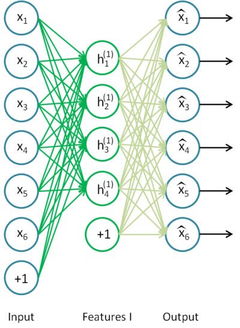
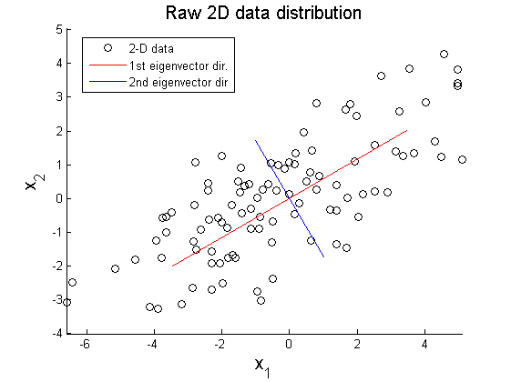
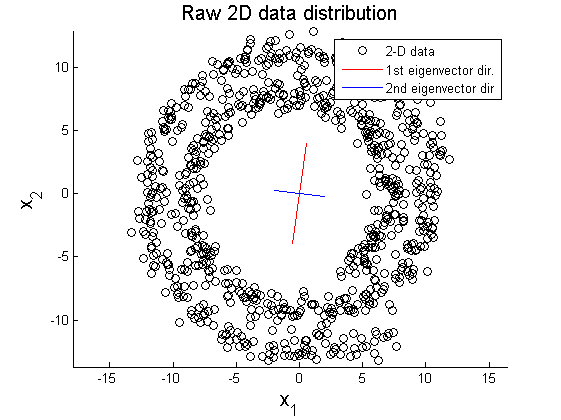
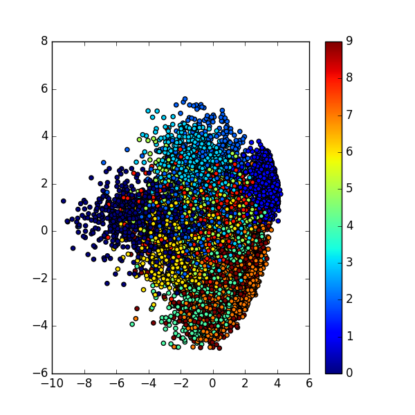
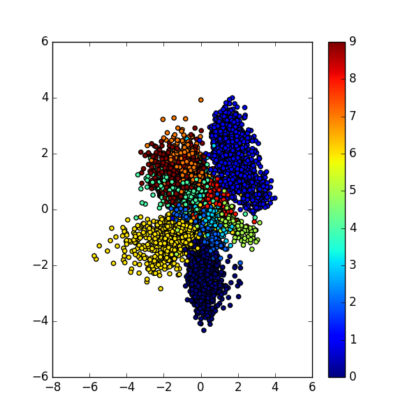

Autoencoders
Posted on January 8, 2017
When it comes to data science problems, neural networks are one of the fastest growing class of algorithms
in terms of popularity. In my last post, I spoke about the role of activation functions in neural networks.
Today, we will talk a specific type of neural network for unsupervised feature learning - the autoencoders
What are autoencoders ?
Autoencoders are neural networks that use the input variables to do the training instead of having a
separate class of labels for training. In other words, the output of the neural network is same as the input.
Mathematically speaking, it is a neural network trying to learn the identity function.
Following is a sample autoencoder

Why learn the identity function ?
Well, there are lots of applications for an autoencoder. The most popular application currently is
pre-training deep neural networks. The idea behind this is to start the training with a more meaningful set
of weights learned by the autoencoder rather than random initial weights.Another common application is
dimensionality reduction.
Majority of the machine learning tasks demand that you generate a compressed representation of the data
in order to be able to build your model with a reasonable time complexity and space complexity.
The process of extracting this compressed representation is called dimensionality reduction.
Dimensionality reduction always involves a certain amount of loss in information. The idea is to balance out
this loss with the gain in computational effort. For the purpose of the post,
we will stick to dimensionality reduction.
So how do we reduce the number of dimensions ?
We already spoke about how autoencoders basically try to reconstruct the input. If the hidden units were
same in number as the input dimension, we would ideally have zero error in reconstruction.
What we do is we restrict the number of hidden units and train the autoencoder to reconstruct the input
with minimal error.
Ok, what’s so special about autoencoders in comparison to other dimensionality reduction techniques like PCA ?
Principal Component Analysis a.k.a PCA projects the input onto a lower dimensional surface. But it works
on the assumption that the data has linearly correlated features. Let’s understand what that means.
The following figures shows the result of applying PCA on linearly correlated data and non linearly correlated data


Image courtesy –
https://www.projectrhea.org/rhea/index.php/PCA_Theory_Examples
.
On linearly correlated data , PCA does a nice job of reducing the dimensions while on non linearly correlated data,
PCA fails. Autoencoders are much more powerful than techniques like PCA in terms of being able to generate
non linear encodings. In my previous
post,
I have explained how activation functions introduce non linearity
in neural networks.
Practical comparison of PCA and Autoencoders
To compare PCA and autoencoders, let’s see how each of them perform on the MNIST digit dataset.
We generate 2d representations and project them on to a plane with each class represented by a
different colour. The following visualization shows how PCA performs.

The following visualization shows how the autoencoders perform.

We see that the representation given by autoencoders turn out to be more separable than what PCAs would give
In conclusion, autoencoders are an interesting approach to unsupervised learning. They find a lot of
applications in machine learning. We saw how they can be used in dimensionality reduction.